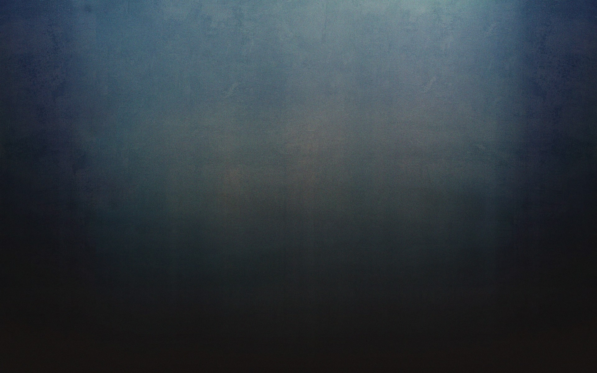

Hi! Iam
Yosafatur Aprendy Panjaitan
Iam Bachelor of Education
About
Namaku
Tentangku
Motivasi
Third slide label
Some representative placeholder content for the third slide.
Some representative placeholder content for the third slide.